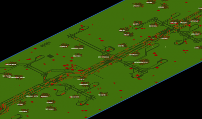
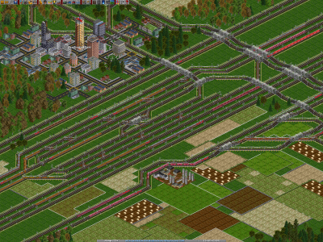

Express and Local ML separation
Basically, the concept is to separate empty and full trains hence giving them different priorities and manipulating train streams with more efficincy while still maintaining single network.
Express in this case means trains headed to the end of mainline, either to drop or drop/pickup station.
Local would be the opposite – from drop to SLH and raw materials pickup stations.
All bi-directional trains carrying goods, pax and other applicable cargo that under circumstances goes both ways – should be using express lanes. All full trains headed to drop – should be using express lanes, but are lower priority and to be inserted into express stream with minimal interuptions of express trains stream (read: priority queue and loadbalancers needed).
All returning to pickup empty trains are getting there via local lanes, which are hubbed in close-to-regular way.
This leads to 2 things – very thick ML, at least 2E+1L each way and simplier SLHs – exit lanes are never same as enter lanes, all trains from SL are getting to express and all trains to SL are simply split from local. BBH, if needed (or ever if possible), will still be bulky – however, in a sense, they would need to worry only about express traffic.
As a test case I took 1024×256 plain map, having in mind a single line with 2 sets of all second tier industries on each end of it, hence maximizing traffic. At first i tried 2E+2L aproach but it turned out to be not enough, so at curernt stage it is 3E+2L, totaling 10 lanes of ML. 
With 400 trains it looks like this:

All SLHs are 4-way quarter hubs, meaning they merge traffic into only one direction and split train stream only from another, 25% of what a full SLH would normally do. And this is how it looks like: 

This hub is in eastern part of the map so all entering trains are headed to west drop, loadbalancer has 1 train queue and prio exit point is placed in a way so accelerating from full stop train gets in right after passing express train with just enough room so following express train does not have to slow down (works in 95% cases). Any SLH like that merges trains only into 2 lanes of express out of 3 available (in this case outter express lane is just passing by) and are switched on each next hub (1&2 and 2&3).
For this implementation of the concept 3 lanes is just about to be saturated, it probably will not work good with more than 450 trains simply due to density of traffic. However i am happy with how single line (being 10 lanes wide of course) deals with 400 trains without major issues while not being overly complicated.
I’m looking for pointers on what can be improved though, so the save game is available :o)
Categories: Development, OpenTTD